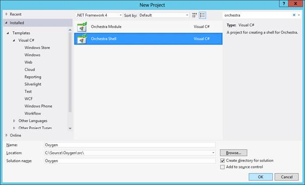
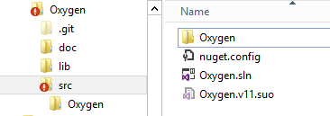
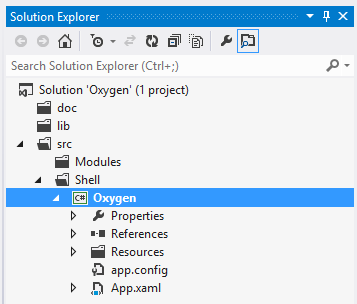
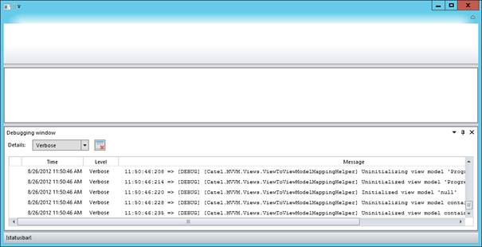

Table Of Contents
Creating the shell¶
When using Orchestra, the first thing that needs to be done is to create the shell. This will make sure that your application actually starts up and can be extended.
Note that this guide also includes some best practices, which are not required but we strongly advise you to follow them
Note that project templates are available and this guide assumes that they are installed on the machine
Creating the project and solution¶
Create a new Orchestra Shell application:
Make sure that your directory structure looks like this after you created the project and solution (move the files if you have to):
Open the solution again and make sure to create solution folders in the solution explorer. This will make sure that the application stays structured and easy to maintain:
Note that the solution directory don’t have to reflect the directories on disk
Adding Orchestra using NuGet¶
Note that as long as the packages are not available yet, this has to be done manually
Now the solution and the shell project are created, it is time to start integrating Orchestra. You can do this by adding the Orchestra.Shell NuGet package. This package will automatically add references to all dependent 3rd party libraries.
Running the shell for the first time¶
Now run the application, it will look like this and the empty shell is ready to be customized.
Customizing the splash screen¶
The splash screen can either be turned off or customized with a custom image.
The turn off the splash screen, change the call in App.xaml.cs from:
bootstrapper.RunWithSplashScreen<ProgressNotifyableViewModel>();
to:
bootstrapper.Run();
To use a custom splash screen, add an image of 465 x 286 to the Resources/Images directory. Make sure to set the build step to Content and set Copy to output is Copy if newer.
If the image is invalid or cannot be found, Orchestra will fall back to its default splash screen.
Creating modules¶
A module is a separate piece of functionality that can be added to the orchestra shell. Orchestra heavily relies on Prism for this part (modularity).
Creating the project¶
To add a module, a new project must be created. Add a new project (Orchestra.Module) and give it a name, in this case OxyGen.Modules.About.
Adding Orchestra using NuGet¶
Note that as long as the packages are not available yet, this has to be done manually
Now the solution and the shell project are created, it is time to start integrating Orchestra. You can do this by adding the Orchestra.Module NuGet package. This package will automatically add references to all dependent 3rd party libraries.
Renaming the module class¶
Each module must have one class defining that it’s a module. The project template automatically creates a module class called MyModule. This class has to be renamed to the right module name, in this case AboutModule:
/// <summary>
/// The about module.
/// </summary>
public class AboutModule : Orchestra.Modules.ModuleBase
{
/// <summary>
/// Initializes the about module.
/// </summary>
public AboutModule()
: base("About")
{
}
}
The module can now be customized by adding views, view models, etc to it. There are a few services that allow the communication between the module and the shell. The most important one is the IOrchestraService. It can be retrieved like this:
var orchestraService = GetService<IOrchestraService>();
Adding a ribbon item¶
A ribbon item is an item that is shown at the top of the ribbon. Below is an example of how to add a ribbon item that will show a document:
var openRibbonItem = new RibbonItem(ModuleName, ModuleName, "Open", new Command(() => orchestraService.ShowDocument<BrowserViewModel>()));
orchestraService.AddRibbonItem(openRibbonItem);
This code will add a ribbon item with the name of the module and the action Open. When the action is executed, orchestraService.ShowDocument() will be executed.
Showing a document view¶
Showing a document is very easy. Assuming that there is a view and view model, this is the only code to be called:
orchestraService.ShowDocument<BrowserViewModel>();